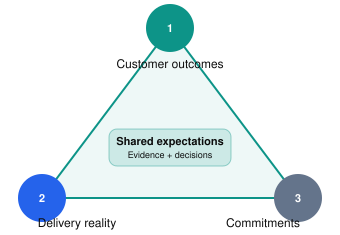
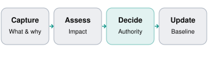

Intermediate–Advanced
90–110 min
Customer delivery & negotiation
Chapter overview
You're a Forward Deployed Engineer working with Northstar Logistics.
Your team has spent four weeks building a shipment exception management system. The six-week pilot is approaching, and the customer is excited.
During the weekly meeting, the COO says:
"This looks great. One more thing: we want the system to automatically email customers, predict late deliveries, and update shipment statuses without human approval. Can you include that in the pilot?"
The engineering team estimates that the additional functionality could require several weeks of development, new security approvals, and significant testing.
The COO responds:
"But we're already paying for this project. I thought your team was supposed to move fast."
What do you say?
A weak FDE might agree to keep the customer happy, silently reduce quality, or refuse the request without explaining why.
A strong FDE identifies the underlying business need, explains the impact of the request, presents viable options, and helps the customer make an informed decision.
Managing expectations isn't about saying yes or no. It's about creating reliable agreements between what the customer wants, what the team can deliver, and what the evidence supports.
Learning objectives
By the end of this chapter, learners should be able to:
Set credible expectations about deliverables, timelines, and dependencies.
Recognize and manage scope creep without damaging customer relationships.
Negotiate scope, time, resources, and quality trade-offs.
Communicate delays and bad news early and constructively.
Handle frustrated customers and difficult stakeholder conversations.
Escalate problems appropriately while preserving accountability.
Document scope changes, decisions, and delivery commitments.
Respond effectively to unrealistic deadlines and high-pressure requests.
10.1 Why expectation management is central to FDE work
FDEs operate at the intersection of customer needs, engineering constraints, and commercial commitments.
These three realities don't always align.
A customer may expect a production-ready solution in four weeks. Engineering may need eight weeks. Sales may have described the solution as configurable when some capabilities require custom development.
The FDE's responsibility is to make those gaps visible and help the appropriate stakeholders resolve them.
The delivery agreement triangle

Healthy delivery requires alignment between desired outcomes, actual engineering feasibility, and authorized commitments.A critical distinction: Expectations vs. commitments
An expectation is what someone believes will happen.
A commitment is what the relevant parties have explicitly agreed to deliver.
For example:
Statement | Classification |
|---|---|
"We hope to demonstrate the pilot in six weeks." | Goal |
"The customer expects automatic exception resolution." | Expectation |
"The signed pilot scope includes classification and dispatcher review." | Commitment |
"We think the API can handle peak volume." | Assumption |
"Production deployment depends on security approval." | Dependency |
Many difficult customer conversations begin because these categories were never distinguished.
The FDE should keep them visible throughout the engagement.
10.2 The five dimensions of delivery trade-offs
Project constraints are often discussed as scope, time, and cost. Enterprise FDE work also requires explicit attention to quality and risk.
1
Scope
What functionality, workflows, and integrations are included?
Example: Shipment classification vs. autonomous customer communication
2
Time
When must milestones or outcomes be achieved?
Example: Six-week pilot deadline
3
Resources
What engineering capacity, access, and support are available?
Example: Two FDEs and limited customer integration support
4
Quality
What reliability, usability, and testing standards must be met?
Example: Accurate classifications and recoverable API failures
5
Risk
What security, compliance, and operational exposures are acceptable?
Example: Human approval required before customer-facing changes
When a customer requests more scope without moving the deadline, something else may need to change.
But security controls and essential quality standards are not bargaining chips. The team should negotiate scope, sequencing, and resources rather than silently compromising mandatory safeguards.
The scope–time trade-off
Illustrative delivery planning
Scenario model
Available timeline: 6 weeks
Illustrative engineering estimate
5 weeks
Fits the illustrative estimate, subject to dependencies and validation.
The lesson is not that every request has a predictable number of weeks attached. It's that scope and timeline changes must be evaluated together.
10.3 Recognizing scope creep before it becomes a crisis
Scope creep is the expansion of project work beyond the agreed baseline without an appropriately reviewed adjustment to commitments, resources, or schedule. Atlassian emphasizes that even small informal requests can accumulate into substantial delivery problems.
Not every new request is scope creep. Some are clarifications, defect corrections, or legitimate changes that should be approved.
Classify the request
Customer request | Likely classification | FDE response |
|---|---|---|
"The dashboard shows the wrong shipment status." | Defect, if agreed behavior is violated | Investigate and correct |
"Can you clarify what the exception categories mean?" | Clarification | Explain and document |
"Add automated customer emails." | New capability | Assess change impact |
"Support another regional system." | Scope expansion | Evaluate integration effort |
"Can we change the color of this label?" | Minor change | Evaluate impact against agreed scope |
"Skip security review to meet the deadline." | Unacceptable shortcut | Maintain required controls |
The correct classification depends on the agreed requirements and contractual responsibilities, not simply the size of the request.
A lightweight change-control process

Changes should be evaluated and approved before becoming new delivery commitments.Capture: Describe the new request, its business rationale, and requested deadline.
Assess: Determine effects on architecture, testing, timeline, cost, staffing, risk, and existing commitments.
Decide: Present alternatives to the authorized decision-maker.
Update: If approved, revise the scope, acceptance criteria, schedule, and stakeholder communication.
Example change request
CR-014 — Automated customer notifications
Field | Proposed record |
|---|---|
Requested by | Northstar Logistics COO |
Business reason | Reduce manual customer updates |
Original scope | Exception classification and dispatcher review |
Requested addition | Send customer emails automatically |
New dependencies | Notification rules, consent, templates, approval policy |
Technical impact | Notification service, retries, audit logs, testing |
Schedule impact | Pending engineering assessment |
Decision owner | Authorized customer sponsor and delivery leadership |
Status | Under review — not committed |
The request may be valuable. Its value does not automatically make it part of the current pilot.
10.4 How to say no without becoming obstructive
A blunt refusal can sound dismissive:
"That's out of scope. We can't do it."
An unqualified yes creates delivery risk:
"Sure, we'll make it happen."
A better approach is to acknowledge the business goal, explain the trade-off, and offer options.
The A–I–O–D framework
A
Acknowledge
Show that you understand why the request matters.
"Reducing manual customer updates would be valuable."
I
Impact
Explain the delivery or operational implications.
"This adds notification logic, new failure cases, and approval requirements."
O
Options
Present feasible alternatives.
"We can prioritize a limited notification prototype or plan a subsequent release."
D
Decision
Clarify who can authorize the trade-off.
"Let's review the options with the sponsor before changing the pilot scope."
This is a practical teaching framework, not a formal industry standard.
Three ways to negotiate scope
Option 1 — Protect the date, reduce scope. Deliver the original core pilot, and defer new functionality to a subsequent milestone.
Option 2 — Expand scope, move the date. Include the additional capability after an approved schedule and resource assessment.
Option 3 — Swap scope. Replace a lower-priority feature with the new request, provided the revised pilot still meets its essential goals.
Adding engineers can sometimes help, but it doesn't automatically accelerate work constrained by external approvals, shared infrastructure, or sequential testing.
10.5 Communicating bad news early
One of the most damaging FDE behaviors is waiting until a deadline is missed before disclosing a material risk.
Customers generally need enough notice to change their plans, allocate resources, or make a different decision.
A useful structure is:
Fact → Impact → Recovery options → Required decision → Next update.
Example: A production deployment is slipping
INEFFECTIVE
"We ran into some unexpected technical challenges, but the team is working hard. We'll keep you posted."
BETTER
"The staging deployment is complete, but the production integration is blocked by an unresolved authentication issue. We cannot responsibly confirm Friday's production release yet. We are testing the credential configuration with your identity team today. Our options are to proceed with an approved staging demonstration or reschedule the production milestone after validation. We'll provide an updated recommendation tomorrow at 2 PM."
The better update is specific without assigning blame or promising a result that has not been validated.
What if the delay is your team's mistake?
Acknowledge it.
For example:
"We underestimated the integration testing effort and should have raised the risk earlier. We're correcting the plan, adding a focused validation step, and will share the revised milestone options today."
Avoid both defensive excuses and dramatic self-criticism. Customers need accountability and a credible recovery plan.
10.6 Handling frustrated or angry customers
A customer may become frustrated because of a missed expectation, financial pressure, or internal scrutiny.
The FDE's role is not to win an argument. It is to understand the concern, establish the facts, and move toward a workable decision.
Useful techniques include:
Acknowledging the concern without agreeing to unsupported claims.
Asking a clarifying question instead of immediately defending the team.
Separating observable facts from assumptions about motives.
Speaking calmly and concretely.
Redirecting toward options, responsibilities, and next actions.
A customer saying "Your team isn't moving fast enough" may be expressing concern about an upcoming board presentation rather than literally requesting a faster coding process.
Understanding the underlying pressure can change the options you propose.
Empathy does not require accepting abuse, concealing risk, or agreeing to an unsafe commitment. Persistent harassment or threats should be handled through the organization's escalation and safety processes.
10.7 Realistic customer escalation — The six-week pilot
The following is a fictional transcript showing how an FDE can navigate a tense customer meeting.
Northstar Logistics — Week 4 escalation
Fictional role-play
COO · Jordan
00:00
We want automated customer emails, predictive late-delivery alerts, and automatic shipment updates included in the pilot. Can you commit to that?
FDE · Alex
01:00
Those capabilities could help reduce the manual work your teams described. Which of the three would have the biggest impact on the pilot's success?
COO · Jordan
02:30
Customer notifications. Our service team spends too much time sending updates.
FDE · Alex
04:00
That helps. The current pilot covers identifying exceptions and letting dispatchers review them. Automated notifications would add new customer-facing behavior, so we'd need to validate the message rules, approval process, and delivery failures before committing.
COO · Jordan
06:00
We're paying for this already. Why can't you just add it?
FDE · Alex
07:00
I understand why it feels like a natural extension. The issue isn't whether it's valuable; it's that it changes what the system does and what we need to test. I don't want to promise something that creates unreliable customer communications.
COO · Jordan
09:00
Leadership is expecting something impressive in two weeks.
FDE · Alex
10:00
We can preserve the original pilot demonstration, which is already progressing. We could also assess a limited notification prototype using approved test recipients, provided it doesn't jeopardize the core milestone. That would not be the same as launching automated emails to customers.
Engineering Lead · Priya
12:00
We also need confirmation of the transportation system's rate limits and an approved notification policy before any production use.
COO · Jordan
14:00
So what exactly are you recommending?
FDE · Alex
15:00
Keep the six-week pilot focused on exception classification and dispatcher review. In parallel, spend a short, agreed discovery period defining notification requirements and estimating the next release. If leadership wants to replace existing pilot scope, we'll present that trade-off explicitly for approval.
COO · Jordan
17:00
Fine. Send me the options and tell me what you need from our side.
FDE · Alex
18:00
I'll send a scope comparison and decision log today. We need your operations owner to define notification rules and your security team to identify required approvals. We'll then provide a validated proposal rather than an unsupported delivery promise.
Why Alex's approach works
Alex first identifies the customer's highest-priority outcome rather than debating all three requests simultaneously.
Alex also distinguishes the original pilot from the new customer-facing behavior, avoids making an unauthorized commitment, and proposes a path to evaluate the change.
Importantly, Alex doesn't treat a demonstration using test recipients as equivalent to production-ready customer notification functionality.
Where Alex could improve
Alex should verify the actual contract and scope of work before describing what is included. The conversation also needs a precise follow-up deadline, named decision-makers, and an assessment of whether the new discovery effort itself affects the original pilot.
The strongest customer conversations are followed by equally strong written documentation.
10.8 When to escalate — and when not to
Escalation is not a punishment or admission of failure. It is a mechanism for bringing a decision or risk to the people authorized to resolve it.
Situation | Appropriate action |
|---|---|
Small technical issue within team ownership | Resolve within engineering |
Cross-team dependency threatening a milestone | Escalate to delivery leads and dependency owners |
Customer requests a contract or scope change | Involve authorized commercial and delivery owners |
Security policy conflict | Engage security governance |
Production incident affecting customers | Follow incident-response escalation |
Persistent hostile behavior | Engage management and appropriate support channels |
A good escalation contains five things
The current facts, the business impact, the actions already taken, the available options, and the decision or assistance needed.
For example:
"Production validation is blocked by an unapproved network rule. The staging workflow remains operational, but the Friday production milestone is at risk. Engineering has completed its configuration checks. We need the customer's infrastructure owner to confirm approval timing by Wednesday, or the sponsor must approve a revised milestone."
This is materially more useful than "We need someone senior to help."
10.9 The expectation management toolkit
An FDE doesn't need a large project-management bureaucracy for every engagement. A small set of reliable artifacts can prevent repeated misunderstandings.
Scope baseline
Agreed deliverables, exclusions, milestones, and acceptance conditions.
RAID log
Risks, assumptions, issues, and dependencies with owners.
Change register
Requested changes, impact assessments, approvals, and status.
Decision log
What was decided, why, by whom, and when.
Weekly status
Progress, customer impact, upcoming milestones, and required actions.
Example weekly status
Northstar Logistics — Week 4
Pilot milestone
Completed: Exception classification workflow and initial dashboard integration.
In progress: Representative user testing and transportation API validation.
Risk: API rate limits and intermittent errors may affect peak-volume processing.
Change request: Automated notifications requested; impact assessment pending.
Customer action: Confirm API limits and nominate a notification requirements owner.
Next decision: Agree whether to preserve the original pilot scope or authorize a revised plan.
Fictional example. Status labels should reflect actual evidence, not optimism or pressure.10.10 Interactive decision lab — What would you do?
Practice selecting a response when customers push for commitments.
Customer decision simulator
1 of 4
The Friday deadline
It's Wednesday. A customer demands a Friday production deployment, but security approval is still pending.
10.11 Practical exercise — Negotiate the pilot scope
Exercise 10.1: The scope negotiation
25–30 min
Scenario: Northstar Logistics
You're in Week 4 of a six-week pilot.
The original scope includes exception classification, a dispatcher review dashboard, and human-approved shipment status changes.
The customer now requests automated customer emails, predictive late-delivery alerts, and autonomous shipment updates.
Your engineering team has not completed an impact assessment, and the customer's API limits remain unverified.
Write a response that acknowledges the business need, explains the scope impact, proposes at least two viable options, and requests an explicit decision.
Auto-saved on this device. Review your answer for customer impact, evidence, assumptions, ownership, and a clear next step.
Example approach
Acknowledge that customer notifications could reduce service-team workload.
Explain that the new request introduces outbound communications, prediction quality, failure handling, and authorization requirements beyond the current pilot.
Offer to preserve the six-week core pilot while assessing a later notification release, or formally replan the pilot after assessing the additional functionality.
Recommend keeping the current milestone unless the sponsor authorizes a revised plan supported by engineering and governance reviews.
Identify the required customer owners and set a date for the impact assessment.
10.12 Practical exercise — Deliver bad news
Exercise 10.2: The missed milestone
15–20 min
Scenario: Meridian Bank
A Friday production release is at risk because integration tests revealed inconsistent behavior in the customer's legacy loan API.
The FDE team has a validated staging workflow, but production testing is incomplete.
The executive sponsor expects a status update today.
Draft a concise message that distinguishes facts from uncertainty, explains the business impact, offers a responsible next step, and identifies any decision needed.
Auto-saved on this device. Review your answer for customer impact, evidence, assumptions, ownership, and a clear next step.
10.13 Recommended learning resources
These resources cover practical negotiation, managing scope changes, and maintaining delivery commitments.
WATCH · REQUIRED · VIDEO
MasterClass Live with Chris Voss
A discussion and demonstration of negotiation concepts including tactical empathy, listening, and understanding the other party's position. Apply the techniques to a difficult customer conversation rather than treating negotiation as a contest.
WATCH · OPTIONAL · SHORT PREVIEW
Chris Voss Teaches the Art of NegotiationSource link needs rechecking. See the resource directory for details.
A brief introduction to the negotiation approach taught in the longer course. The linked video is a free trailer; the full MasterClass is a separate paid offering.
READ · REQUIRED · PRACTICAL GUIDE
Atlassian
Explains how to establish a scope baseline, evaluate changes, and keep new requests from silently altering commitments.
READ · REQUIRED · SCOPE DOCUMENTATION
Atlassian
Learn how to document deliverables, exclusions, constraints, timelines, and scope boundaries.
READ · OPTIONAL · PROJECT BASELINES
Understanding the Project Baseline
Atlassian
Covers the use of scope, schedule, and cost baselines to evaluate progress and deviations.
Learning assignment
After reading the scope creep guide, write a short change-control policy for a fictional FDE engagement.
Specify how requests are captured, how impact is evaluated, who approves changes, and how the updated plan is communicated.
Then practice explaining that policy to a customer in under one minute, without using project-management jargon.
10.14 Interactive knowledge quiz
10.15 Chapter summary
Managing expectations is one of the most important responsibilities of an FDE because customer trust depends on reliable communication and delivery commitments.
The essential lessons are:
Distinguish goals, assumptions, expectations, and commitments. They are not interchangeable.
Recognize scope creep early. New requests should be captured and evaluated before becoming commitments.
Negotiate trade-offs explicitly. Scope, time, resources, quality, and risk must be considered together.
Communicate bad news early. Customers need enough information to respond before a risk becomes a crisis.
Acknowledge frustration without overpromising. Empathy and accountability can coexist with firm delivery boundaries.
Escalate to the right decision-makers. Escalation should resolve uncertainty or unblock action.
Document important decisions. A shared scope baseline, change register, and decision log protect alignment.
The central principle: A great FDE doesn't promise that every customer request will be delivered. They make promises that can be trusted and help customers choose wisely when circumstances change.
UP NEXT · MODULE 02 / CHAPTER 11
Writing Technical Proposals and Presenting Solutions
We'll cover converting discovery and requirements into customer-ready technical proposals, solution architecture diagrams, implementation plans, assumptions, cost estimates, risk registers, and executive presentations.
The chapter will include a realistic enterprise proposal, a presentation walkthrough, verified learning resources, a practical proposal-writing exercise, and an interactive quiz.
Field notes
Capture the idea you will use in your next customer conversation.